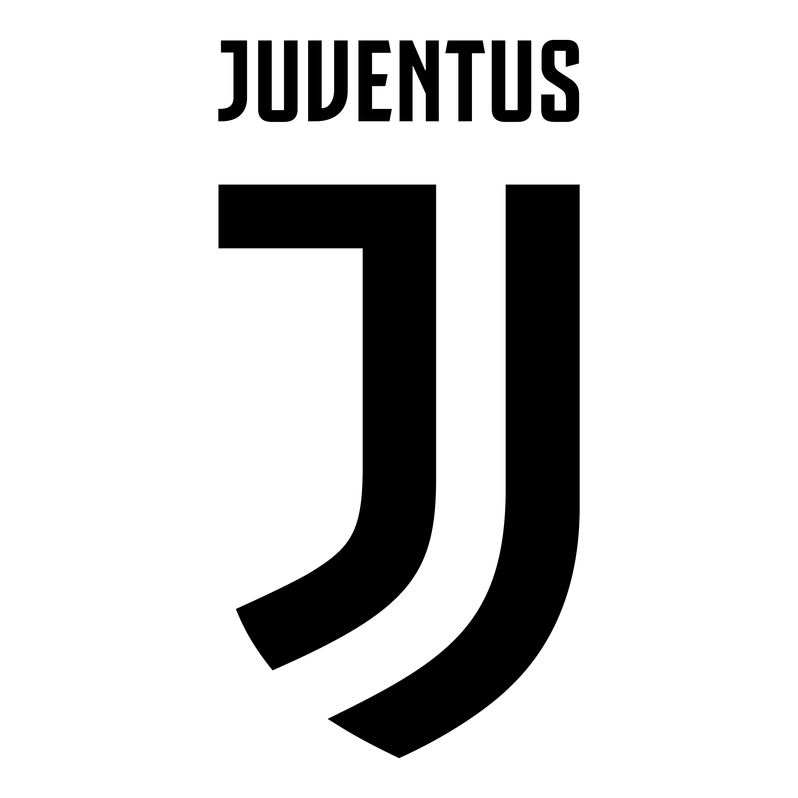
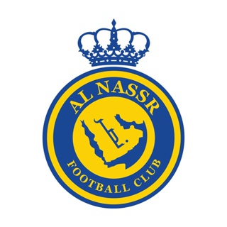

Conozcamos mejor su paso por los clubes
| Equipos | ||||
|---|---|---|---|---|
| Sporting de Lisboa (2002-2003) | Manchester United (2003-2009) y (2021-2022) | Real Madrid (2009-2018) | Juventus de Turín (2018-2021) | Al Al-Nassr (2022-2023) |
| |
 |  | ||
-ETAPA POR EL SPORTING:Cristiano Ronaldo debutó en el año 2002 en el Sporting de Lisboa, con apenas 17 años. En este club, nuestro delantero se consolidó en el primer equipo de forma drástica al marcar un doblete a la jornada 7 de liga. Debido a su gran juego, el Manchester United se enamoró de su manera de jugar y no dudó en traerlo a Inglaterra por un total de 19 millones de euros.
-ETAPA POR EL UNITED:Cristiano Ronaldo se instaló en Inglaterra delaitando con su forma de jugar, siendo muy importante en un equipo lleno de leyendas. Este muchacho batió muchísimos récords en su estancia por Manchester, ganando numerosos trofeos importantes como podrían ser la Champions o el Balón de Oro marcando un total de 84 goles en 196 partidos y con un promedio altamente elevado de regates por partido, demasiado bien para jugar como mediocentro izquierdo.Sin embargo, el Real Madrid impuso un total de 94 millones de euros, la oferta más alta hecha hasta la fecha, que el United inevitablemente aceptó.
-ETAPA POR EL REAL MADRID: Cristiano Ronaldo se instaló en España para asombrar a la afición española con su nivel de juego. En los primeros años ya se veían destellos del jugador que iba a ser. Gracias a su talento y trabajo duro consiguió anotar una asombrante cifra de 311 goles en 293 partidos, una cosa desproporcionada. Estos años en España fueron los más importantes de nuestro comandante, siendo funfamental en el juego de su equipo incluso haciendo que el equipo juegue para él al ser tan determinante en un equipo lleno de estrellas. En esta etapa tan deleitosa Ronaldo consiguió numerosos récords como puede ser ser campeón europeo en 3 veces consecutivas. Finalmente, la Juventus de Turín pagó un total de 117 millones de euros llevándose a un jugador medio acabado.
-ETAPA POR LA JUVENTUS: Cristiano Ronaldo se instaló en Italia con mucha ilusión, pero su edad ya se hacía notar cambiando drásticamente de posición a delantero centro. Todos pensábamos que este jugador no daría mucho más de sí, pero nos sorprendió marcando un total de 81 goles en 98 partidos, una locura a esa edad. Ronaldo ganó numerosos títulos como por ejemplo la Supercopa Italiana. Finalmente, la Juventus intentó echar a CR7 injustamente. Parecía que se iba a quedar sin club pero el United decidió acogerlo de nuevo por un total de 17 millones.
-SEGUNDA ETAPA EN EL UNITED: Cristiano Ronaldo se instaló nuevamente en Inglaterra muy ilusionado y siendo la figura del equipo, siendo determinante en un club que estaba en la ruina. Este, fue un año de sequía, sin ningún título pero con algún jugador del mes de la Premier League. Finalmente, Mr.Champions decidió no seguir las instrucciones de su entrenador, lo que hizo ser apartado del equipo hasta rescindir contrato.
-ETAPA EN EL AL-NASSR: Cristiano Ronaldo se instaló tiempo después de no tener equipo en Arabia Saudí, y, de momento, es la figura de este equipo, iniciando una revolución de jugadores yéndose a esta rara liga. De momento ha ganado algún título y esperemos que siga dando su máximo nivel como siempre hace.
Cabe recalcar también su debut con la selección de Portugal en el año 2003 iniciándose con poca esperiencia pero ganando méritos para ser hoy el principal referente de la historia de la nación siendo también el capitán del proyecto.